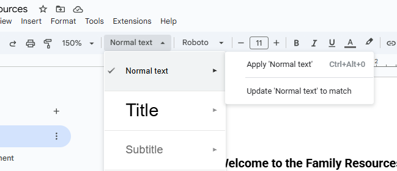

Welcome to the Family Resources Live Document
Different categories of resources are in their own “Document tabs”. Look on the left of the document editor. This document is hosted on Google Docs and automatically converted to a website for convenience.
I have made an attempt at a style in the TN.Gov Resources page (tab).
Whatever styling you do, I will copy and repeat on the other pages. Styles in Google Docs are not directly editable. You hand-style the text, then use “update style to match” in the style label to copy the current formatting into the style.

More fonts